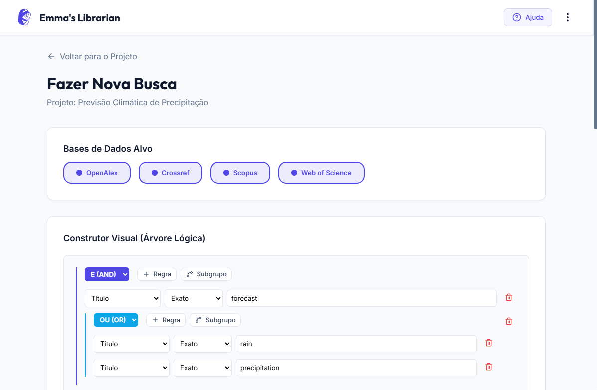
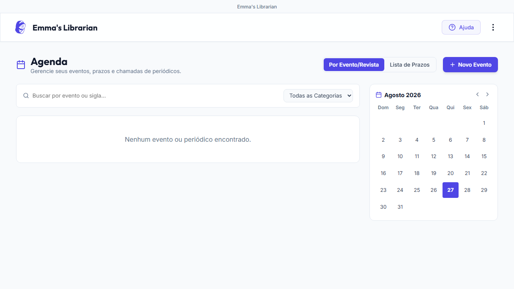
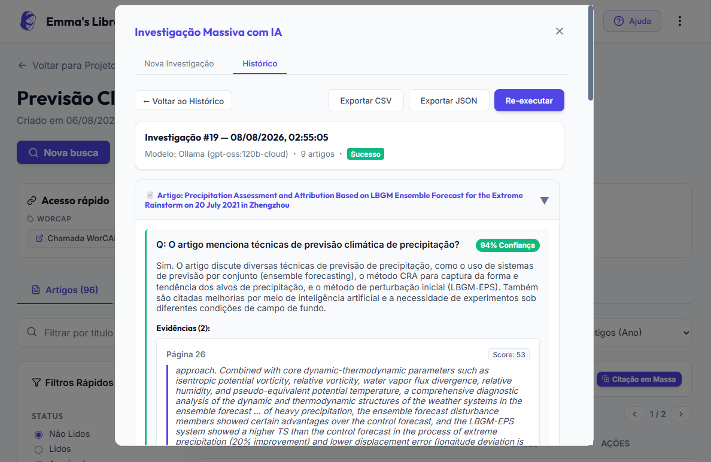
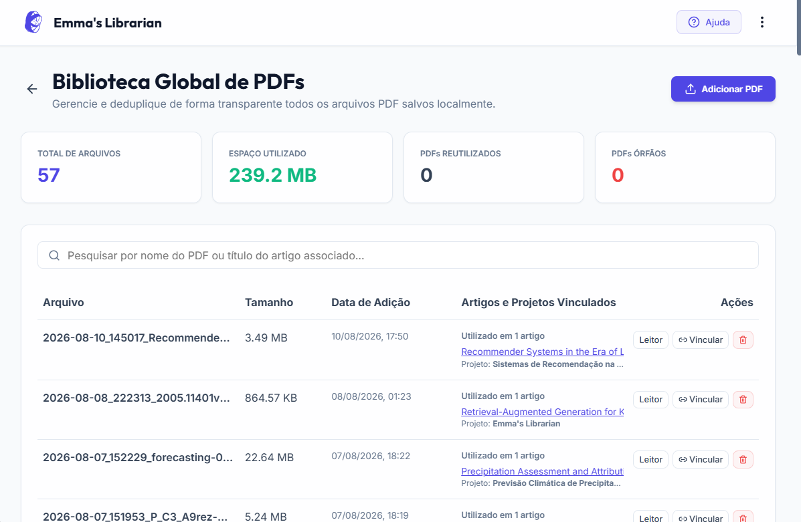

Emma's Librarian
A suíte completa para Revisão Sistemática
Tudo o que você precisa para conduzir pesquisas acadêmicas de alto nível, com total controle sobre os seus dados e privacidade garantida.
Carregando versão...
Ler os TutoriaisTudo o que você precisa para conduzir pesquisas acadêmicas de alto nível, com total controle sobre os seus dados e privacidade garantida.
Carregando versão...
Ler os TutoriaisConecte as APIs oficiais da Scopus e Web of Science. Faça buscas simultâneas com nosso construtor visual de regras, unificando os resultados instantaneamente.

Organize seus compromissos, tarefas e etapas da revisão bibliográfica em uma agenda integrada. Acompanhe os prazos de submissão e mantenha o foco na produtividade da sua pesquisa.

Nossa plataforma realiza a extração e RAG com IA para que você possa conversar com seus PDFs e extrair dados estruturados de múltiplos artigos simultaneamente. Compatível com GPT-4, Claude, Gemini ou Ollama (local).

Seus arquivos PDF e todo o seu banco de dados SQLite ficam armazenados estritamente na sua máquina local. O que é seu, fica com você.

Preparamos guias detalhados e práticos para você aproveitar ao máximo todos os recursos da ferramenta, desde buscas até o painel de Inteligência Artificial.
Ver Guias e TutoriaisSim! É um software de código aberto focado em facilitar a vida dos pesquisadores, sem custos embutidos.
Não. Seus PDFs e sua base de dados são salvos estritamente no disco da sua máquina para garantir total privacidade dos seus dados.
Você pode configurar o uso da API da OpenAI (GPT-4), Anthropic (Claude), Google (Gemini) ou configurar Ollama para rodar modelos 100% locais sem internet.
Sim. Como o Emma's Librarian é apenas uma interface local, você precisará de chaves institucionais fornecidas pela sua universidade ou departamento para acessar as bases de pesquisa.